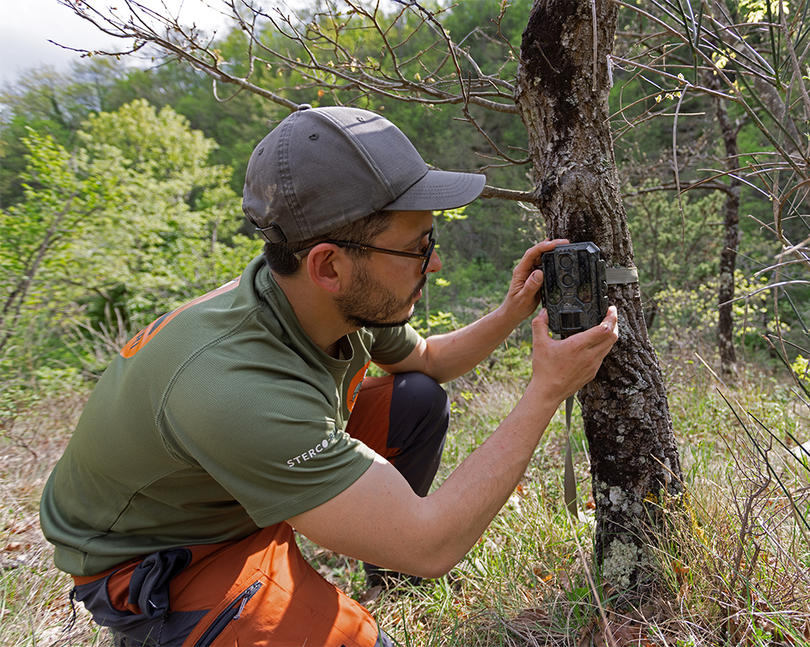

Mi chiamo Daniele Nesci e sono una guida ambientale escursionistica e fotografo naturalista.
Lavoro sul campo attraverso osservazione diretta e indiretta, utilizzando fotografia naturalistica, fototrappolaggio e registrazioni bioacustiche per studiare la presenza e il comportamento della fauna selvatica nel territorio.

Il mio lavoro non si ferma al singolo scatto, ma sulla continuità dell’osservazione nel tempo, con particolare attenzione alle dinamiche ecologiche e ai rapporti tra specie che coabitano nell'area di studio.
Dal 2022 seguo un progetto continuativo dedicato a un branco di lupi appenninici. Con il tempo ho potuto osservare come hanno usato parti di territorio guidati dalla coppia dominante e le varie interazioni tra i membri della famiglia; integrando video di fototrappole sistemate su stazioni fisse attive tutto l'anno, e registrazioni bioacustiche delle attività vocali del branco, creando un archivio di dati che nel tempo può fornire alcune informazioni su cui basare ipotesi su abitudini e stime numeriche dei componenti del branco.